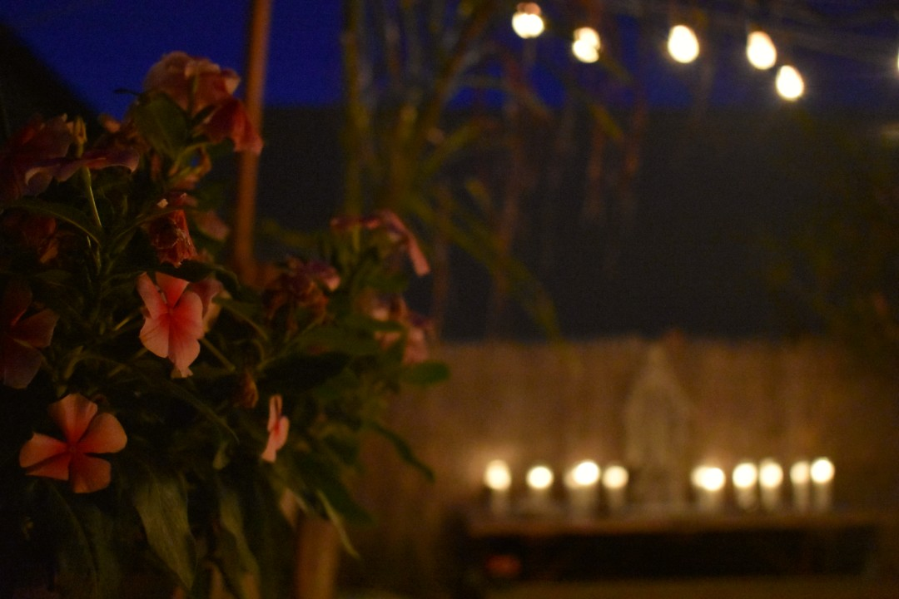
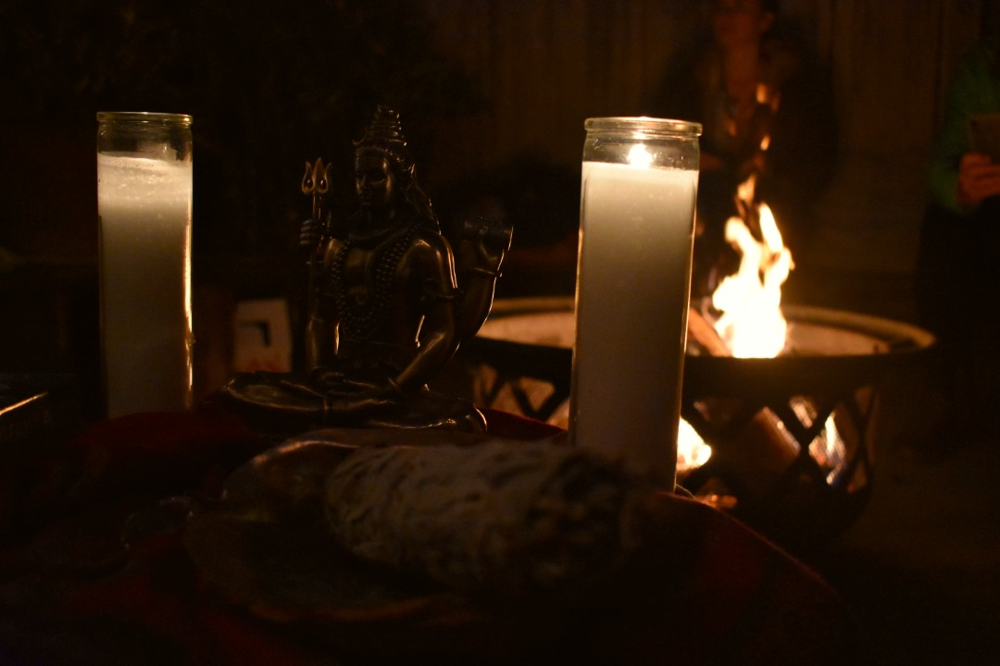
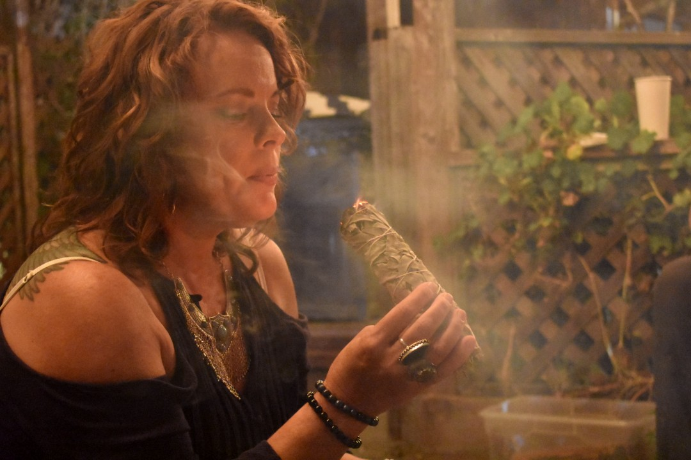
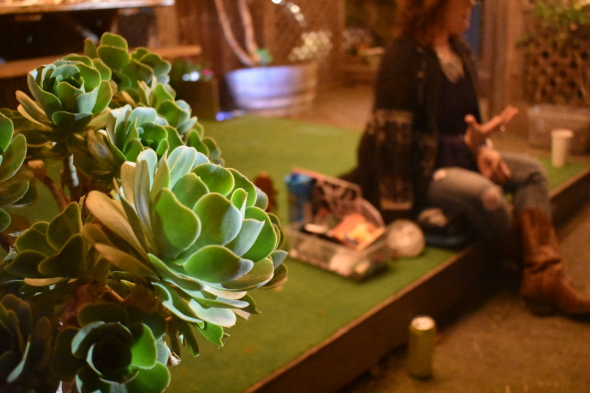
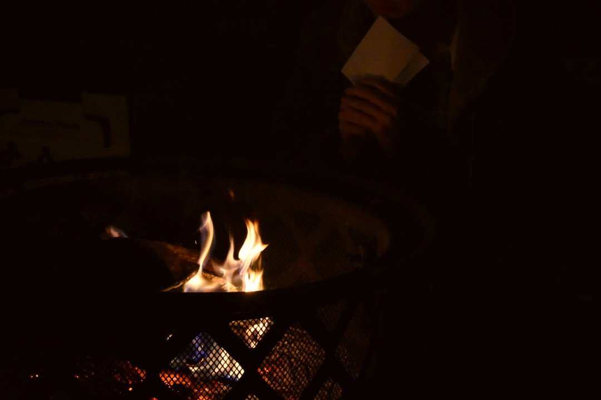
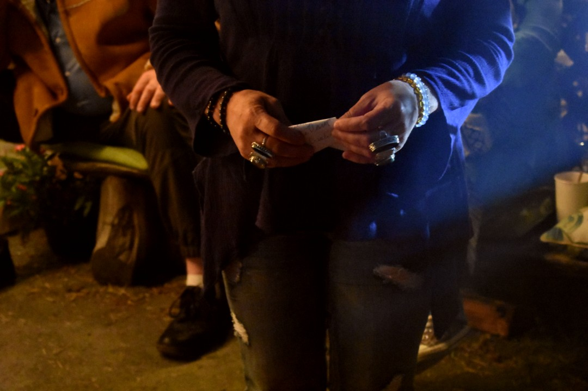
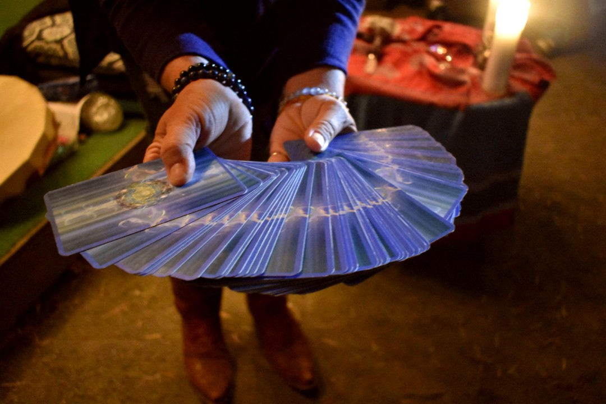
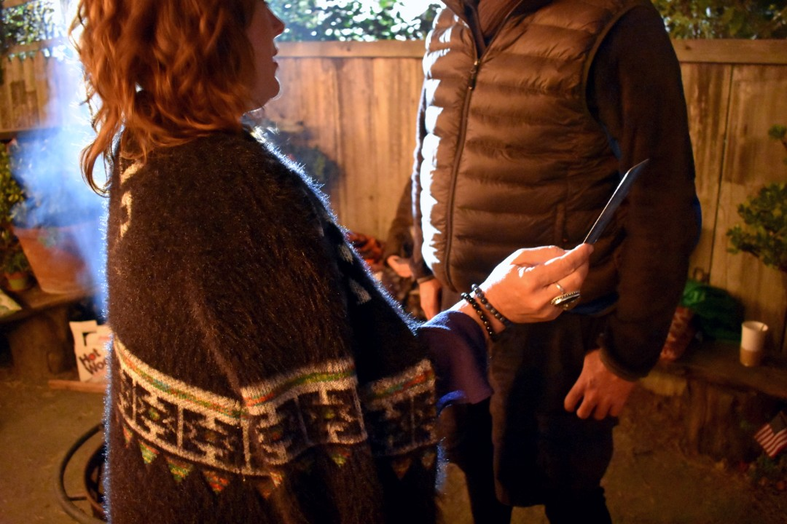
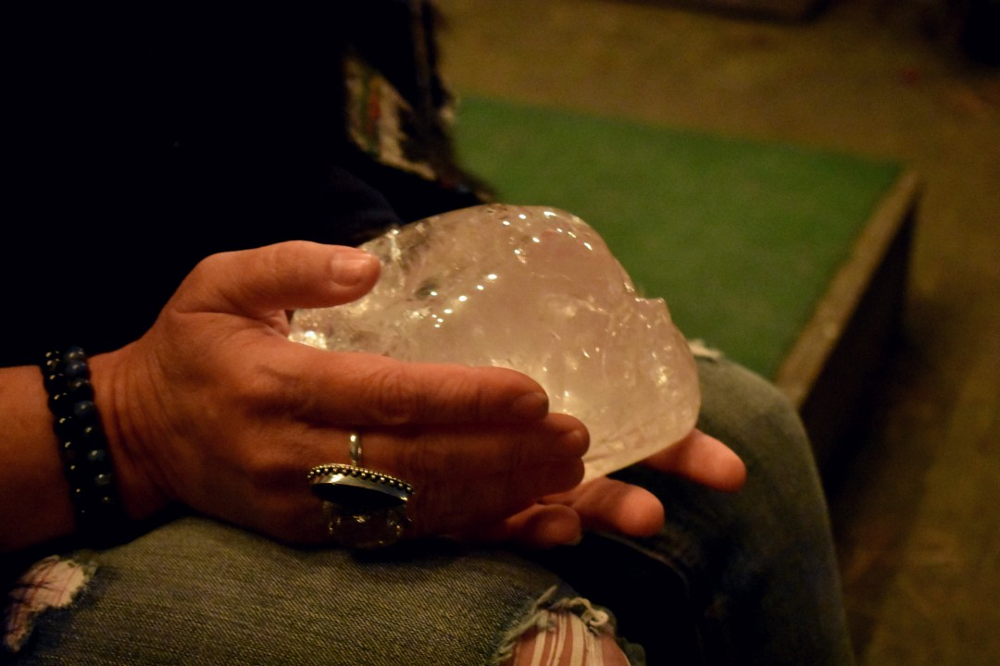
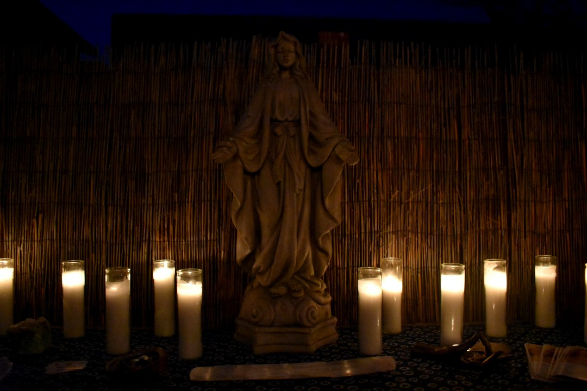

A Ceremony for the Moon
Modern Witchcraft in Morro Bay
1 / 10

Every full moon, the back patio at Top Dog cafe in Morro Bay transforms into a ceremony space for all things astrological and spiritual.
2 / 10

The space is carefully created by a woman who has been working as a spiritual healer for almost 20 years. A passerby might call the candles, crystals, and burning sage ‘witchy,’ but her goal is only to do what feels right for herself and those who’ve come to her ceremony. No labels here.
3 / 10

Laurine Tonkin is an intuitive medium, psychic, and healer. “I connect into the collective pulse of what's happening in the universe… and basically get a feeling or a knowing in myself that helps me to guide and direct other people into their highest healing or into their highest place and that they can exist in this moment.”
4 / 10

Tonkin uses items like crystals, figures of the divine feminine, candles, and tarot cards to channel energy for her ceremony and its attendees. She began the evening with a guided meditation to find a sense of being grounded.
5 / 10

The emotion in the space was palpable as participants burned pieces of paper with sentiments or aspects of their life they wanted to release. Grace Collins found sobriety after her first moon ceremony, after years of struggling with addiction. “It’s always been a huge thing in my life; going back to that moment of throwing that into the fire and letting it go.”
6 / 10

“Sitting with Laurine and having the intuitive messages come through, and being able to reflect on what I need to release in my life has been really beneficial.” -Julie Donahoo (participant)
7 / 10

Laurine feels a calling to facilitating spiritual understanding and healing to groups of people. She ended the ceremony by having participants draw tarot cards.
8 / 10

If a participant needed help with their interpretation, Laurine would gently guide them until they found the meaning together. “There's something in me that says you have to go create magic like that,” she says.
9 / 10

Laurine finds the label ‘witch’ to be a compliment, though she doesn’t explicitly call herself one. “I think that we are definitely blowing out that old stereotype, where people are running around doing hexes, that's not what this is about.”
10 / 10

"It's about women working with medicine, with plants, with the stars, with the earth, with the planets. We're a part of all of that.”
❮
❯